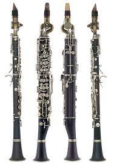
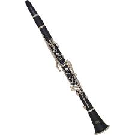
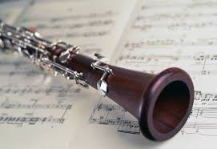

Clarinet

The clarinet is a type of single-reed woodwind instrument. Like many wind
instruments, clarinets are made in several different sizes, each having
its own range of pitches. All have a nearly-cylindrical bore and a flared
bell, and utilize a mouthpiece with a single reed. A person who plays a
clarinet is called a clarinetist (sometimes spelled clarinettist). While
the similarity in sound between the earliest clarinets and the trumpet may
hold a clue to its name, other factors may have been involved. During the
Late Baroque era, composers such as Bach and Handel were making new
demands on the skills of their trumpeters, who were often required to play
difficult melodic passages in the high, or as it came to be called,
"clarion" register. Since the trumpets of this time had no valves or
pistons, melodic passages would often require the use of the highest part
of the trumpet's range, where the harmonics were close enough together to
produce scales of adjacent notes. The trumpet parts that required this
specialty were known by the term clarino and this in turn came to apply to
the musicians themselves. The word clarinet may have come from the
diminutive version of the clarion or clarino and it has been suggested
that clarino players may have helped themselves out by playing
particularly difficult passages on these newly developed "mock
trumpets".[1] Johann Christoph Denner is generally believed to have
invented the clarinet in Germany around the year 1700 by adding a register
key to the earlier chalumeau, usually in the key of C. Over time,
additional keywork and airtight pads were added to improve the tone and
playability.[2] The most common clarinet is the B♭ clarinet. The clarinet
in A, pitched a semitone lower, is also regularly used in orchestral,
chamber, and solo music. The bass clarinet has been common in orchestras
since the middle of the 19th century. The modern bass clarinet is in B♭
but has extra keys to extend the register down to low written C3. The
clarinet family ranges from the (extremely rare) BBB♭ octo-contrabass to
the A♭ piccolo clarinet. The clarinet is used in classical music, concert
bands, military bands, marching bands, klezmer, jazz, and other styles.
History
Lineage
The clarinet has its roots in the early single-reed instruments or hornpipes used in Ancient Greece,
Ancient Egypt, Middle East, and Europe since the Middle Ages, such as the albogue, alboka, and
double clarinet. The modern clarinet developed from a Baroque instrument called the chalumeau. This
instrument was similar to a recorder, but with a single-reed mouthpiece and a cylindrical bore. Lacking
a register key, it was played mainly in its fundamental register, with a limited range of about one
and a half octaves. It had eight finger holes, like a recorder, and two keys for its two highest
notes. At this time, contrary to modern practice, the reed was placed in contact with the upper lip.
Around the turn of the 18th century, the chalumeau was modified by converting one of its keys into a
register key to produce the first clarinet. This development is usually attributed to German instrument
maker Johann Christoph Denner, though some have suggested his son Jacob Denner was the inventor. This
instrument played well in the middle register with a loud, shrill sound, so it was given the name
clarinetto meaning "little trumpet" (from clarino + -etto). Early clarinets did not play well in the
lower register, so players continued to play the chalumeaux for low notes.[64] As clarinets improved,
the chalumeau fell into disuse, and these notes became known as the chalumeau register. Original Denner
clarinets had two keys, and could play a chromatic scale, but various makers added more keys to get
improved tuning, easier fingerings, and a slightly larger range.[64] The classical clarinet of Mozart's
day typically had five keys. Clarinets were soon accepted into orchestras. Later models had a mellower
tone than the originals. Mozart (d. 1791) liked the sound of the clarinet (he considered its tone the
closest in quality to the human voice) and wrote numerous pieces for the instrument, and by the time of
Beethoven (c. 1800-1820), the clarinet was a standard fixture in the orchestra.
Pads
The next major development in the history of clarinet was the invention of the modern pad. Because
early clarinets used felt pads to cover the tone holes, they leaked air. This required pad-covered holes
to be kept to a minimum, restricting the number of notes the clarinet could play with good tone. In
1812, Iwan Müller, a Baltic German community-born clarinetist and inventor, developed a new type of pad
that was covered in leather or fish bladder. It was airtight and let makers increase the number of
pad-covered holes. Müller designed a new type of clarinet with seven finger holes and thirteen keys.
This allowed the instrument to play in any key with near-equal ease. Over the course of the
19th-century, makers made many enhancements to Müller's clarinet, such as the Albert system and the
Baermann system, all keeping the same basic design. Modern instruments may also have cork or synthetic
pads.
Keywork and toneholes
The final development in the modern design of the clarinet used in most of the world today was
introduced by Hyacinthe Klosé in 1839. He devised an arrangement of keys and toneholes that
simplified fingering. It was inspired by the Boehm system developed for flutes by Theobald Böhm.
Klose was so impressed by Bohm's invention that he named his own system for clarinets the Boehm system,
although it is different from the one used on flutes. This new system was slow to gain popularity
but gradually became the standard, and today the Boehm system is used everywhere in the world except
Germany and Austria. These countries still use a direct descendant of the Mueller clarinet known as
the Oehler system clarinet. Also, some contemporary Dixieland players continue to use Albert
system clarinets. Other key systems have been developed, many built around modifications to the basic
Bohm system: Full Bohm, Mazzeo, McIntyre, Benade NX, and the Reform Boehm system.
Construction

Materials
Clarinet bodies have been made from a variety of materials including wood, plastic, hard rubber,
metal, resin, and ivory. The vast majority of clarinets used by professionals are made from
African hardwood, mpingo (African Blackwood) or grenadilla, rarely (because of diminishing supplies)
Honduran rosewood, and sometimes even cocobolo. Historically other woods, notably boxwood, were
used. Most inexpensive clarinets are made of plastic resin, such as ABS. Resonite is Selmer's
trademark name for its type of plastic. Metal soprano clarinets were popular in the early 20th
century until plastic instruments supplanted them;[39] metal construction is still used for the
bodies of some contra-alto and contrabass clarinets and the necks and bells of nearly all alto and
larger clarinets.[40] Ivory was used for a few 18th-century clarinets, but it tends to crack and
does not keep its shape well.[41] Buffet Crampon's Greenline clarinets are made from a composite
of grenadilla wood powder and carbon fiber.[42] Such clarinets are less affected by humidity and
temperature changes than wooden instruments but are heavier. Hard rubber, such as ebonite, has
been used for clarinets since the 1860s, although few modern clarinets are made of it. Clarinet
designers Alastair Hanson and Tom Ridenour are strong advocates of hard rubber. Mouthpieces are
generally made of hard rubber, although some inexpensive mouthpieces may be made of plastic. Other
materials such as crystal/glass, wood, ivory, and metal have also been used. Ligatures are often
made of metal and plated in nickel, silver, or gold. Other materials include wire, wire mesh,
plastic, naugahyde, string, or leather.
Reed

The clarinet uses a single reed made from the cane of Arundo donax, a type of grass. Reeds may also
be manufactured from synthetic materials. The ligature fastens the reed to the mouthpiece. When
air is blown through the opening between the reed and the mouthpiece facing, the reed vibrates and
produces the clarinet's sound. Basic reed measurements are as follows: tip, 12 millimetres
(0.47 in) wide; lay, 15 millimetres (0.59 in) long (distance from the place where the reed touches
the mouthpiece to the tip); gap, 1 millimetre (0.039 in) (distance between the underside of the
reed tip and the mouthpiece). Adjustment to these measurements is one method of affecting tone
color. Most clarinetists buy manufactured reeds, although many make adjustments to these reeds, and
some make their own reeds from cane "blanks".[48] Reeds come in varying degrees of hardness,
generally indicated on a scale from one (soft) through five (hard). This numbering system is not
standardized—reeds with the same number often vary in hardness across manufacturers and models.
Reed and mouthpiece characteristics work together to determine ease of playability, pitch
stability, and tonal characteristics.
Components

The reed is attached to the mouthpiece by the ligature, and the top half-inch or so of this
assembly is held in the player's mouth. In the past, string was used to bind the reed to the
mouthpiece. The formation of the mouth around the mouthpiece and reed is called the embouchure.
The reed is on the underside of the mouthpiece, pressing against the player's lower lip, while the
top teeth normally contact the top of the mouthpiece (some players roll the upper lip under the top
teeth to form what is called a 'double-lip' embouchure). Adjustments in the strength and shape
of the embouchure change the tone and intonation (tuning). It is not uncommon for clarinetists to
employ methods to relieve the pressure on the upper teeth and inner lower lip by attaching pads to
the top of the mouthpiece or putting (temporary) padding on the front lower teeth, commonly from
folded paper. Next is the short barrel; this part of the instrument may be extended to fine-tune
the clarinet. As the pitch of the clarinet is fairly temperature-sensitive, some instruments have
interchangeable barrels whose lengths vary slightly. Additional compensation for pitch variation
and tuning can be made by pulling out the barrel and thus increasing the instrument's length,
particularly common in group playing in which clarinets are tuned to other instruments (such as in
an orchestra or concert band). On basset horns and lower clarinets, the barrel is normally replaced
by a curved metal neck. The main body of most clarinets is divided into the upper joint, the holes
and most keys of which are operated by the left hand, and the lower joint with holes and most keys
operated by the right hand. Some clarinets have a single joint: on some basset horns and larger
clarinets the two joints are held together with a screw clamp and are usually not disassembled for
storage. The left thumb operates both a tone hole and the register key. On some models of clarinet,
such as many Albert system clarinets and increasingly some higher-end Böhm system clarinets, the
register key is a 'wraparound' key, with the key on the back of the clarinet and the pad on the
front. Advocates claim that this key configuration improves sound and makes moisture less likely
to accumulate in the tube beneath the pad,but these keys can be harder to keep in adjustment.
BACK TO TOP
BACK TO HOME
{kind=link}
{kind=link}